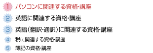
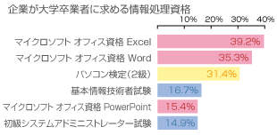
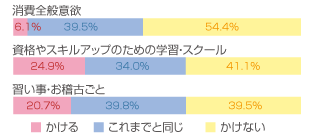

- ホーム
- MOS資格試験とは？
就職・転職・昇格・実務に生きるスキルを証明できます

運転免許証同様、現在社会での就転職や昇格に必須となったパソコンオフィス資格。大半の企業で使用される「Microsoft
Office」の「Word」や「Excel」といったビジネスソフトは、業務効率化向上のために開発されたもの。
就転職の面接や履歴書にアピールできれば、業務を効率よくこなせる能力を持つ人材と評価されます。その能力を証明する資格が「マイクロソフト
オフィス スペシャリスト」なのです。必須のビジネススキルとして、2003～4年以降、受験者数が急上昇している注目の資格です。
就職希望者持っていたら採用したくなる資格ランキングでも上位に
大手インターネットポータルサイト「goo」が「自分が採用面接者だったとして、就職希望者がもっていたら採用したくなる資格」についてのアンケートを行ってみたところ、1位「パソコンに関連する資格」2位「英語に関連する資格」となりました。
「好印象を与える資格ランキング」では、1位「英語」。ここでわかるように「面接で自分をPRするポイント」は即戦力になるオフィス資格だと就転職希望者自身もわかって来ている時代となったようです。
就職・転職の際、企業が求める資格・能力
では、実際に企業サイドでは、どういった人材を希望しているのか？を見てみましょう。2004年7月 三菱総合研究所が「企業が若年者に対して求める能力要件に関する調査研究事業」として調査した結果、
大学卒業者に求める情報処理資格で、上位5位中4つがパソコン資格、とくに1位・2位・5位にマイクロソフトオフィス資格がランキングされた。
この調査後、よりＩＴ化・業務効率化も進んだ上に、リーマンショックで経済は悪化、就職はより厳しい時代となっています。現在の調査結果はありませんが、パソコン（オフィス資格）スキルは、この数字以上になっていると推測されます。
就職・転職・昇格・実務に生きるスキルを証明できます
運転免許証同様、現在社会での就転職や昇格に必須となったパソコンオフィス資格。大半の企業で使用される「Microsoft Office」の「Word」や「Excel」といったビジネスソフトは、業務効率化向上のために開発されたもの。
就転職の面接や履歴書にアピールできれば、業務を効率よくこなせる能力を持つ人材と評価されます。その能力を証明する資格が「マイクロソフトオフィス スペシャリスト」なのです。必須のビジネススキルとして、2003～4年以降、受験者数が急上昇している注目の資格です。
資格合格にスクールは必要か？

運転免許証同様、現在社会での就転職や昇格に必須となったパソコンオフィス資格。大半の企業で使用される「Microsoft Office」の「Word」や「Excel」といったビジネスソフトは、業務効率化向上のために開発されたもの。就転職の面接や履歴書にアピールできれば、業務を効率よくこなせる能力を持つ人材と評価されます。その能力を証明する資格が「マイクロソフト オフィス スペシャリスト」なのです。必須のビジネススキルとして、2003～4年以降、受験者数が急上昇している注目の資格です。